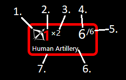

Hi! This is the Battlefield application made for the Kingdoms & Warfare supplement for Dungeons & Dragons 5th edition!
In this document you will find a lot of information about this application, including but not limited to usage information, credits, and upcoming features!
A quick note about interface scaling, the UI is designed for a 1080p monitor (minus browser elements), if you have a bigger or smaller
monitor you can use the browser page zoom (usually ctrl + scroll) to scale the UI to fit better. In the future the
battlefield itself won't be static, but will be pan-able and zoom-able independently of the UI.
In its current state the application features adding commanders, creating or importing units, creating traits. Units have various stats and other information. It features a battlefield onto which units can be placed and moved around.
Keep in mind that as the application develops things may change and parts of the following instructions may become wrong or obsolete.
Keep an eye on the changelog box that appeared when you first opened the application. It will show up again and list changes made since your last visit!
K&W is the followup to the Strongholds & Followers supplement also released by MCDM.
While S&F introduces player settlements in and retainers K&W increases the scale significantly with the introduction of potentially kingdom-sized organizations and large scale warfare and diplomacy alongside your regular heroic D&D shenanigans (level of heroism may vary).
In K&W warfare is enacted with units which represent groups (usually) of combatants of different kinds. These are deployed by commanders (Characters) with one side being the player characters and the other being controlled by the DM.
K&W Battlefield was inspired by the Miro boards Matt used on his streams to enact battles. In these I noticed some time was spent centering unit cards in the spaces and adding or removing effect icons for example.
I decided I should make a proper digital version of that. I looked around and found that someone had made it into some kind of game, but it didn't seem to be meant to be used for playing D&D but was its own thing?
So I went ahead with my idea and started trying to figure out WebRTC to work. About a week later and many failures I decided to use a library for it instead, since I couldn't get a working connection.
So on August 1st I started working on the actual interface and did some small tests with the networking library which worked great.
Now 8 days later the application can be used to enact warfare locally, but has no network functionality yet.
To start, create at least 1 commander using the
Creating a commander involves a name, the maximum number of units (the character's proficiency bonus), choosing an icon and a color.
When networking is implemented the intention is that a connecting player will create their commander.
At least two commanders are needed for the turn tracker to work. Created commanders are automatically added to the turn tracker.
Units are listed in the
Round 0 is also considered the deployment round. During this round units can be stacked in the reserve ranks.
If you have no units open the
You then have the JSON format for unit import/export and can create all the units you want at once and then import them.
In the
Traits can be one of four types:
In the future there may be a way to mark recharging traits as spent and to remind the commander about rolling for recharge on their turn. "Recharge" would then be added as an additional type.
A unit card has 7 components:
By
Currently this includes the units stats, and traits if any.
By
The bubble menu enables the following interactions with the unit:
When a commander is created their icon is added to the
When a commanders initiative is changed the icons are sorted accordingly.
Click the icon next to the
If you hover the cursor over the tab in the top left the
This panel shows the total tier of each commander with units on the board with health above zero.
It also shows the sum of each side (Players vs NPCs), and if one side has more than double the score of the other
That number will be green, indicating that sides victory.
The titular battlefield features two sides. Each side has a mirrored set of ranks, and each rank has 5 spaces.
Each space can hold one unit, except in the
At the start of each turn if a rank has no units in it, it will automatically collapse. You can manually toggle a ranks collapsed state by
Also part of the battlefield is the
This project makes use of some libraries and a number of other assets without which development would have taken significantly longer. These are as follows:
Thanks to people in the MCDM Discord who have provided feedback and suggestions and shown interest in the project! I'm not going to list names, but you know who you are!